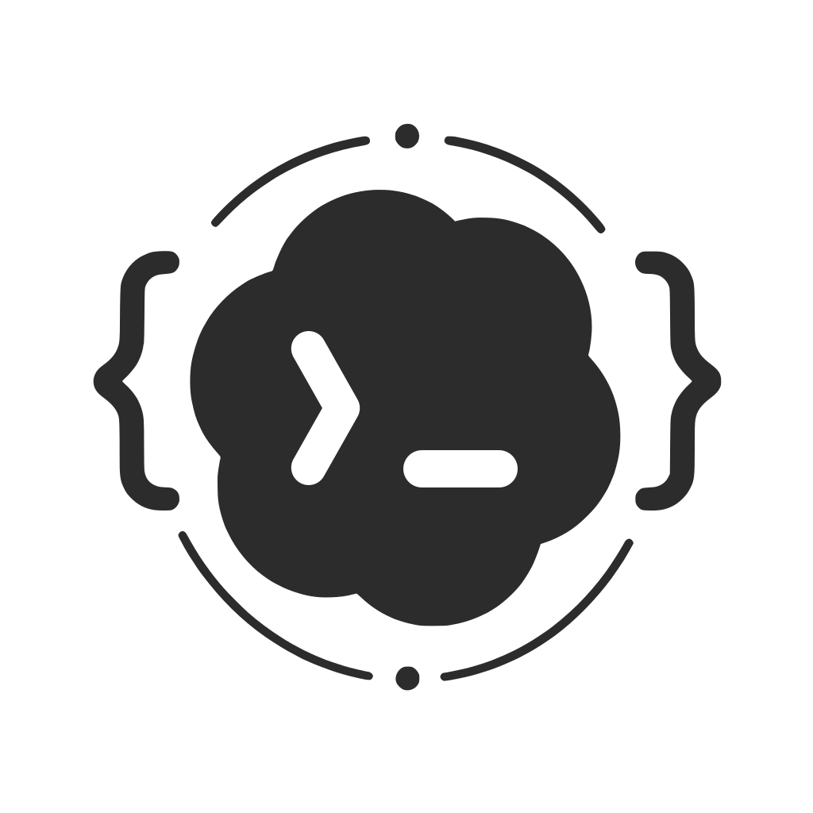

全景概览
过去 24 小时 · 4 个客户端经 OpenCodex 分发到 4 个活跃渠道
6h24h3d7d
2,184较前一窗口 +12%
2.55M输入 1.97M · 输出 0.58M
98.6%首次 96.9% · 回退挽回 1.7%
37次Aimami → A6api · 全部挽回
0.82sP95 2.4s
客户端 · 经 OpenCodexToken
CX
Codex App0.164
WS · gpt-6.1-sol
1.89M合并计量
OC
OpenCode1.1
常用 → Krill
未细分
>_
Codex CLI0.164
常用 → NewApi
未细分
CC
Claude Code2.1
sonnet-4-6
0.66M496 次
OpenCode、Codex CLI 与 Codex App 共用 codex 入口，用量合并计入。为每个客户端分配独立密钥 →
绕过 OpenCodex
CuCursor未安装
GGemini CLI直连
OpenCodeX-Desktop管理节点 · 运行中
实时适配

OpenCodex本地网关 · 6 渠道 · 4 活跃
首次 96.9%挽回 1.7%失败 1.4%
渠道24h Token
Kr
Krill124ms
498 次 · 99.4%
0.58M23%
NA
NewApi86ms
1,069 次 · 99.2%
1.18M46%
Am
Aimami230ms
496 次 · 97.0%
0.61M24%
A6
A6api162ms
158 次 · 含回退 37
0.18M7%
+2备用渠道24h 无流量
GGoogle 官方外部
线宽 · Token 占比
光点 · 过去窗口请求加速回放
彗尾 · Krill 实时转发
点线 · Desktop 托管
虚线 · 未细分 / 直连
琥珀 · 回退
mock 数据